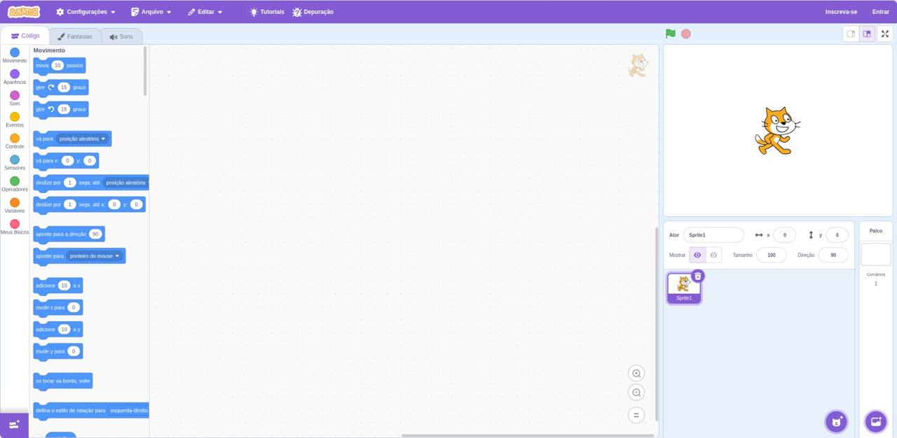
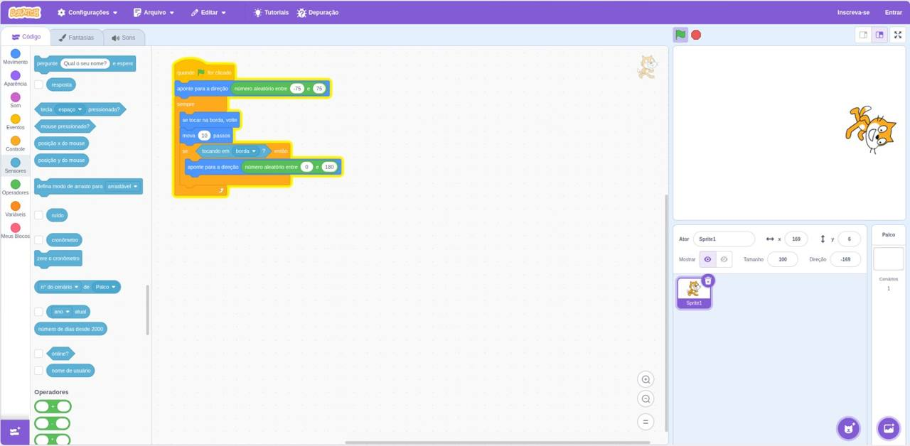
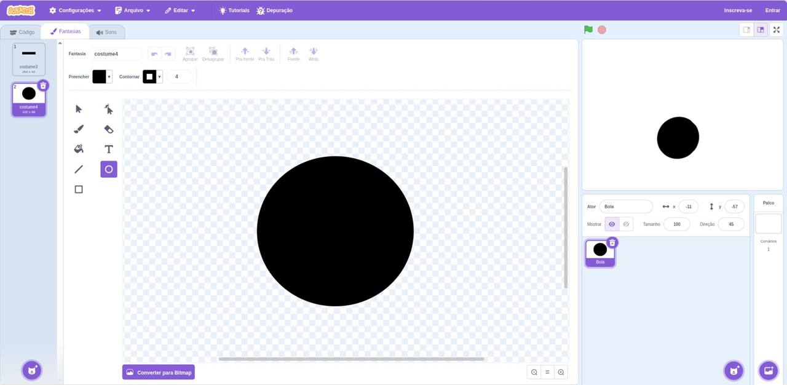
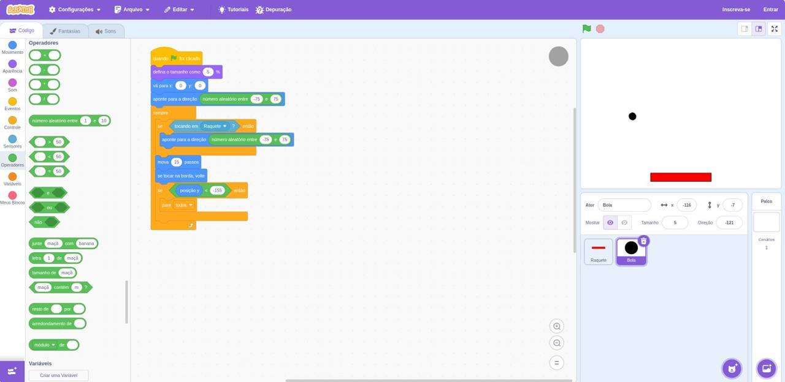
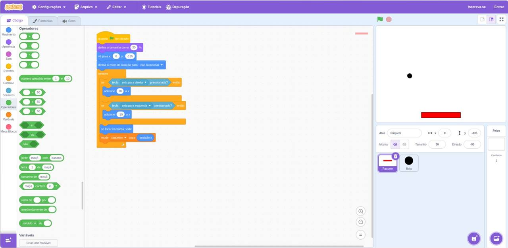

Bem-vindos ao
Scratch Day
Clique na seta para começar
Boas-vindas
Que bom que você veio! 💜
Obrigado pela presença! Hoje de manhã você vai aprender a programar, ou seja, a dar ordens para o computador.
Vamos usar o Scratch, onde a gente programa encaixando blocos coloridos, como se fosse LEGO. E no final você vai ter criado o seu próprio jogo! 🎮
Escolha a cor do seu robô ajudante:
Roteiro
O que vamos fazer hoje
Missão final
Criar um jogo de Pong: uma bola que quica pela tela e uma raquete que você controla pelo teclado. Se a bola passar… fim de jogo!
Spoiler
Este é o jogo que você vai criar!
Como jogar
- 🖱️ Mexa o mouse em cima do jogo, ou use as setas ← →
- 🏓 Não deixe a bola passar da raquete
- ⭐ Cada rebatida vale 1 ponto
Até o fim da aula, você vai montar esse jogo sozinho, bloco por bloco, no Scratch.
Combinados
Nossos combinados
Pediu ajuda? Levante a mão
A equipe vai até você.
Avance junto com a turma
Clique na seta só quando o professor pedir.
Errar faz parte
Erro em programação tem até nome: bug. Achar e consertar é divertido!
Ajude o colega
Terminou antes? Dê uma força para quem está do lado.
Aquecimento
O que é programar?
Programar é dar instruções, passo a passo, para o computador.
O computador é muito rápido, mas faz exatamente o que você manda: nem mais, nem menos. E na ordem que você mandar!
Programa: escovar os dentes 🪥
- Pegar a escova
- Colocar a pasta na escova
- Escovar os dentes
- Enxaguar a boca
- Guardar a escova
Tudo certo! 😁
Aquecimento · Desafio
Programe o robô! Fase 1 de 3
Leve o Bit até a estrela ⭐ sem bater nas pedras. Monte o programa e aperte Executar.
Conhecendo o Scratch
O que é o Scratch?
- 🧩Uma linguagem de programação feita de blocos que se encaixam, sem precisar digitar código.
- 🎓Criada no MIT, uma universidade dos Estados Unidos, especialmente para crianças e jovens.
- 🌎Gratuita, funciona no navegador e é usada por milhões de pessoas no mundo todo.
- 🎮Dá para criar jogos, animações, histórias e músicas.
Vamos abrir o Scratch!
- Clique no botão abaixo. O Scratch vai abrir em uma nova aba.
- Está em inglês? Clique em Settings (ou no 🌐 globo) → Language → Português Brasileiro.
- Volte para esta aba quando o professor pedir.
Dica esperta
Deixe as duas janelas lado a lado
- Clique nesta janela e aperte ⊞ Win + ←. Ela vai para a metade esquerda da tela.
- Do lado direito, escolha a janela do Scratch.
- Pronto! Você lê aqui e programa ali. 🙌
Prefere uma tela só? Troque de aba com Ctrl + Tab.
Interface
A tela do Scratch clique nos números

📌 O Scratch tem três abas: Código, Fantasias e Sons. Hoje vamos usar só Código e Fantasias.
Vocabulário
Palavras que vamos usar muito
Ator
Um personagem ou objeto do jogo. O gatinho que já vem pronto se chama Sprite1.
Palco
O quadro branco onde tudo acontece. É ali que o jogo aparece.
Fantasia
A aparência do ator. Dá para desenhar uma fantasia nova!
Código (script)
Uma pilha de blocos encaixados: são as instruções do ator.
Bandeira verde
Clique nela para começar o programa.
Botão vermelho
Clique nele para parar tudo.
Os blocos
Cada formato tem um trabalho
🎩 Chapéu
Fica em cima de tudo. Diz quando o código começa.
when flag clicked
🧱 Comando
Uma ação. Encaixa em cima e embaixo.
move (10) steps
🔁 Boca (C)
Abraça outros blocos para repetir ou testar algo.
forever move (10) steps end
🔷 Pontudo
Uma pergunta de sim ou não.
<touching (borda v)?>
⚪ Redondo
Um valor, como um número.
(pick random (1) to (10))
Os blocos
Cada cor é uma família clique nas cores
Movimento
Faz o ator se mexer: andar, girar, ir para um lugar, apontar para uma direção.
move (10) steps turn cw (15) degrees go to x: (0) y: (0) point in direction (90) if on edge, bounce
Aparência
Muda como o ator aparece: falar, trocar de fantasia, mudar o tamanho, sumir e aparecer.
say [Olá!] for (2) seconds next costume set size to (50) % hide show
Som
Toca sons e músicas.
start sound (Miau v) play sound (Pop v) until done
Eventos
Dizem quando o código começa: ao clicar na bandeira, ao apertar uma tecla, ao clicar no ator.
when flag clicked when [espaço v] key pressed when this sprite clicked
Controle
Controlam o fluxo: esperar, repetir, repetir para sempre, testar uma condição, parar.
wait (1) seconds repeat (10) end forever end if <> then end stop [todos v]
Sensores
Fazem perguntas sobre o jogo: está tocando em algo? Uma tecla foi apertada?
<touching (borda v)?> <key (seta para direita v) pressed?> (mouse x)
Operadores
Fazem contas e comparações e sorteiam números.
((2) + (3)) (pick random (1) to (10)) <(y position) < (-150)> <<> and <>>
Variáveis
Guardam informações, como os pontos de um jogo.
set [pontos v] to (0) change [pontos v] by (1) show variable [pontos v]
Quiz relâmpago ⚡
De que família é este bloco?
Missão 1 · Primeiro código
Faça o gato andar e voltar na borda 🐱
Na aba Código, com o ator Sprite1 selecionado, faça o gato andar para os lados e mudar de direção quando bater na borda.
- Arraste quando ⚑ for clicado (Eventos)
- Encaixe embaixo um sempre (Controle)
- Dentro do sempre, coloque mova 10 passos
- Logo abaixo, se tocar na borda, volte
- Clique na bandeira verde e veja o gato andar!
💡 O gato ficou de cabeça para baixo?
Antes do sempre, coloque:
set rotation style [esquerda-direita v]
Missão 1 · Conferindo
Uma possível resposta
when flag clicked point in direction (90) set rotation style [esquerda-direita v] forever move (10) steps if on edge, bounce end
🔒 O professor vai mostrar a resposta.
Como funciona?
- Quando a bandeira for clicada, o código começa.
- O gato olha para a direita (direção 90).
- O sempre repete sem parar: anda 10 passos… anda 10 passos…
- Se bater na borda, ele vira e volta.
Experimente: troque o 10 por 3 ou por 25. O que muda?
Caça ao bug 🐛
Este código tem um bug!
Alguém montou assim, mas o gato gruda na parede e fica tremendo. 😵
when flag clicked forever point in direction (-90) move (10) steps if on edge, bounce end
Por que isso acontece?
Missão 2 · Novos blocos
Sorteios e sensores 🎲
(pick random (-75) to (75))
<touching (borda v)?>
if <touching (borda v)?> then point in direction (pick random (-180) to (180)) end
As direções no Scratch
Direção sorteada: 90
Missão 2 · Sorteios e sensores
O gato escolhe para onde ir 🎲
Atualize o seu código para o gato escolher uma direção aleatória quando começar e também quando tocar na borda.
- Troque o 90 do aponte para a direção por um número aleatório entre -75 e 75
- Dentro do sempre, coloque um se … então
- No buraco pontudo do se, encaixe tocando em borda?
- Dentro do se, faça o gato apontar para uma direção aleatória
- Clique na bandeira várias vezes. Cada vez é diferente?
when flag clicked point in direction (pick random (-75) to (75)) forever move (10) steps if <touching (borda v)?> then point in direction (pick random (-180) to (180)) end if on edge, bounce end

🔒 O professor vai mostrar a resposta.
Hora do intervalo!
Estique as pernas, beba água e volte quando o relógio zerar.
Na volta: vamos criar o jogo Pong! 🏓
Missão 3 · Jogo Pong
Hora de criar um jogo! 🏓
A bola anda em direções aleatórias e quica nas paredes. Você controla a raquete com as setas e precisa rebater. Se a bola passar… fim de jogo!
- 1Desenhar a raquete e a bola
- 2Programar a raquete
- 3Programar a bola
- 4Fim de jogo
Pong · Etapa 1 de 4
Desenhe a raquete e a bola ✏️
- Passe o mouse no botão Escolha um ator (canto de baixo, à direita) e clique no pincel 🖌️ Pintar
- Na aba Fantasias, use o retângulo ▭ para desenhar uma raquete fininha e comprida. Escolha uma cor em Preencher
- No campo Ator, troque o nome para Raquete
- Pinte outro ator e use o círculo ◯ para desenhar a Bola
- Troque o nome desse ator para Bola
Quer deixar só a raquete e a bola? Clique no gato e na lixeira 🗑️ para apagá-lo.

Pong · Etapa 2 de 4
Programe a raquete ⬅️➡️
Clique no ator Raquete. Ela deve começar embaixo e andar quando você apertar as setas.
- Comece com quando ⚑ for clicado
- Coloque vá para x: 0 y: -140, que é a parte de baixo do palco
- Dentro de um sempre, use se … então com tecla seta para direita pressionada?
- Dentro do se, coloque adicione 10 a x
- Faça o mesmo para a seta para esquerda, com -10
Código da raquete
when flag clicked go to x: (0) y: (-140) forever if <key (seta para direita v) pressed?> then change x by (10) end if <key (seta para esquerda v) pressed?> then change x by (-10) end end
💡 x é a posição de um lado para o outro e y é a posição de cima para baixo. O meio do palco é x: 0, y: 0.
Pong · Etapa 3 de 4
Programe a bola ⚫
Clique no ator Bola. Ela usa o que você aprendeu nas missões 1 e 2!
- Quando a bandeira for clicada, a bola vai para x: 0 y: 100
- Aponta para uma direção aleatória entre -60 e 60
- Para sempre: mova 10 passos e se tocar na borda, volte
- Se estiver tocando em Raquete?, aponta para uma direção aleatória para cima
- Clique na bandeira e tente rebater!
Código da bola (parte 1)
when flag clicked go to x: (0) y: (100) point in direction (pick random (-60) to (60)) forever move (10) steps if on edge, bounce if <touching (Raquete v)?> then point in direction (pick random (-60) to (60)) end end
Pong · Etapa 4 de 4
Fim de jogo! 🛑
Se a bola passar da raquete, ela chega lá embaixo, onde o y é bem pequeno. Aí o jogo acaba!
- Dentro do sempre da bola, logo depois do mova, coloque um se … então
- Encaixe posição y < -150, usando o < dos Operadores e a posição y do Movimento
- Dentro do se: diga Fim de jogo! por 2 segundos
- E depois: pare todos
- Jogue! Você conseguiu fazer um jogo! 🎉
⚠️ O se do fim de jogo precisa vir antes do “se tocar na borda, volte”. Senão a bola quica no chão e o jogo nunca acaba!
when flag clicked go to x: (0) y: (100) point in direction (pick random (-60) to (60)) forever move (10) steps if <(y position) < (-150)> then say [Fim de jogo!] for (2) seconds stop [todos v] end if on edge, bounce if <touching (Raquete v)?> then point in direction (pick random (-60) to (60)) end end


🔒 O professor vai mostrar a resposta.
Socorro! 🆘
Deu problema? Confira aqui
😶 Cliquei na bandeira e nada acontece
Confira se o código começa com quando ⚑ for clicado e se ele está no ator certo. Clique no ator embaixo do palco para ver o código dele.
👻 A bola atravessa a raquete
No bloco tocando em … ?, o nome tem que ser Raquete. Escolha na setinha ▾ do bloco.
🏃 A raquete sai da tela
Coloque se tocar na borda, volte dentro do sempre da raquete.
🔄 A raquete fica de cabeça para baixo
Antes do sempre, use defina o estilo de rotação para não rotacionar.
🐢 A bola está muito lenta ou muito rápida
Mude o número do mova 10 passos: maior é mais rápido, menor é mais lento.
♾️ O jogo nunca acaba
O se posição y < -150 precisa estar antes do se tocar na borda, volte. Se a bola for muito grande, troque -150 por -130.
🐘 A raquete ou a bola ficou enorme
Use defina o tamanho como 50% (Aparência) ou mude o Tamanho embaixo do palco.
Terminou? Turbine seu jogo! 🚀
Desafios extras
Placar
Crie uma variável pontos (em Variáveis). Ela começa em 0 e ganha 1 a cada rebatida.
Ver dica
set [pontos v] to (0) if <touching (Raquete v)?> then change [pontos v] by (1) end
Barulhinho
Toque um som cada vez que a bola bater na raquete. Na aba Sons dá para escolher outros!
Ver dica
if <touching (Raquete v)?> then start sound (Pop v) end
Cada vez mais rápido
Crie a variável velocidade. A bola anda velocidade passos, e a cada rebatida a velocidade sobe.
Ver dica
set [velocidade v] to (8) move (velocidade) steps change [velocidade v] by (1)
Bola arco-íris
Faça a bola mudar de cor a cada rebatida e escolha um cenário bonito para o palco.
Ver dica
change [cor v] effect by (25)
3 vidas
Em vez de acabar logo, a bola volta para cima e você perde uma vida. Com 0 vidas, fim de jogo!
Ver dica
if <(y position) < (-150)> then change [vidas v] by (-1) go to x: (0) y: (100) end if <(vidas) = (0)> then stop [todos v] end
Dois jogadores
Crie uma segunda raquete lá em cima, controlada pelas teclas A e D. Agora é você contra um amigo!
Ver dica
go to x: (0) y: (150) if <key (a v) pressed?> then change x by (-10) end
Antes de ir embora
Salve o seu jogo! 💾
- Lá em cima no Scratch, clique em Arquivo
- Clique em Baixar para o seu computador
- Vai ser salvo um arquivo terminado em .sb3. Esse é o seu jogo!
Peça para a equipe ajudar a mandar o arquivo para o seu e-mail ou o de um responsável.
🏠 Continue em casa
- O Scratch é gratuito: é só entrar em scratch.mit.edu
- Com a ajuda de um adulto, crie uma conta para guardar seus projetos
- Para abrir o seu jogo: Arquivo → Carregar do seu computador
- Clique em Tutoriais no Scratch para aprender coisas novas
Certificado de
Programador(a) Scratch
Certificamos que
Você
criou o seu próprio jogo no Scratch Day.
Obrigado por participar! 💜
Hoje você aprendeu a dar ordens para o computador e criou um jogo. Agora você é um(a) programador(a)!